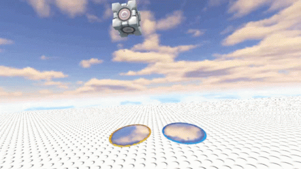
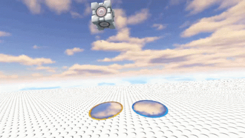

Mechanically Challenged
Mechanically Challenged is a monthly challenge hosted by MooNiZZ and Captain Coder's Academy in which members of the community recreate different mechanics found in games! The goal is to create a library of references and examples for these mechanics in as many different engines and languages as possible.
August 2024 - Time Manipulation
This months mechanic is Time Manipulation!
In 2008, Jonathan Blow's puzzle-platformer Braid came to XBox and blew our minds with its incredibly satisfying time manipulation mechanics!
In this month's challenge, you are tasked with implementing a Rewind mechanic that allows the player to reverse all of their actions! Remember, the goal is to create a simple (and hopefully elegant) solution that others can learn from and use.
Bonus: Create additional time manipulation mechanics.
Braid, Anniversary Edition
The trailer below demonstrates the desired mechanics for this month's challenge.
You can get a copy of Braid from our partner link below! Doing so provides you with one of our favorite games and helps support Mechanically Challenged!
The Challenger: b3agz
This month's challenger is b3agz! A YouTuber, twitch streamer, indie game devver, writer, and holder of a remarkably short attention spa... Be sure to check him out: About b3agz!
Prize: Most Educational Mechanic
Entries submitted before September 1st 2024 will be eligible for the Most Educational Mechanic prize! A $50 prize that will be selected by our challenger: b3agz!
How to Participate
Full instructions for submitting an entry and rules for eligibility can be found on itch.io LINK
Previous Challenges
June/July 2024 - Portal Physics

 

This months mechanic is Portals!
17 years ago Valve released Portal, a mind-blowing game for its time. Today, many consider it to be a classic that that holds up very well today. The main mechanic in the game is Portals! You can place 2 different portals anywhere and when you enter one of them you come out through the other, keeping your momentum and your rotation is changed based on the portals rotation!
The challenge for this month is to recreate the physics behavior of portals in a 2D or 3D environment. Optional bonus points if you can recreate the visual and placement behaviors.
Requirements:
- Be able to go through a portal and come out through the other portal, both ways.
- Keep the momentum when you go through the portals
- Rotate the player and objects that travel through the portals based on the orientation of the portals.
Optional:
- The visuals! When you look at a portal it would be great to see through it!
- Be able to place portals as a player
Prizes
Entries submitted before July 1st 2024 will be eligible for an Educational Mechanic prize!
Two $50 Educational Mechanic prizes will be awarded: one by Captain Coder and one by MooNiZZ. The selection process is at the sole discretion of the judge. The judges will be looking for clean implementations that can be utilized by new developers to implement the mechanic.
How to Participate
Full instructions for submitting an entry and rules for eligibility can be found on GitHub: LINK
May 2024 - Special Platforms: Slopes and Loops


This month's mechanic is... Special Platforms: Slopes and Loops!
The Sonic series made great use of special platforms to create twisting, winding, and fast paced levels! This included sloped platforms that allowed the player to accelerate while moving down and fight gravity while moving upward. Probably more iconic are the loops that Sonic uses to create a sense of movement and speed!
This month, you are challenged to write an implementation for sloped platforms, looping platforms, or both! A few things to notice from the examples:
- The character sprite adjust to the angle of the slope
- The character's velocity is affected by the slope: they slow down going up and speed up moving down.
- The character will slide down a slope that is too steep.
- The character cannot make it through a loop if their velocity is not great enough
Both 2D and 3D submissions are welcome! Additionally, it is up to you how you choose to implement this mechanic. However, entries that focus on simplicity, modularity, and code reuse are more likely to win an Educational Mechanic prize!
Prizes
Entries submitted before June 1st 2024 will be eligible for an Educational Mechanic prize!
Two $50 Educational Mechanic prizes will be awarded: one by Captain Coder and one by MooNiZZ. The selection process is at the sole discretion of the judge. The judges will be looking for clean implementations that can be utilized by new developers to implement the mechanic.
How to Participate
Full instructions for submitting an entry and rules for eligibility can be found on GitHub: LINK
April 2024 - Dropping Through Platforms

This month's mechanic is... Dropping through platforms!
This is a very common mechanic in 2D Platformers where you can stand on a platform, hold down, and press jump to drop through the platform you're standing on. Typically, from beneath the platform, it is also possible to jump through the platform and land on it.
Prizes
Entries submitted before May 1st 2024 will be eligible for an Educational Mechanic prize!
Two $50 Educational Mechanic prizes will be awarded: one by Captain Coder and one by MooNiZZ. The selection process is at the sole discretion of the judge. The judges will be looking for clean implementations that can be utilized by new developers to implement the mechanic.
How to Participate
Full instructions for submitting an entry and rules for eligibility can be found on GitHub: LINK